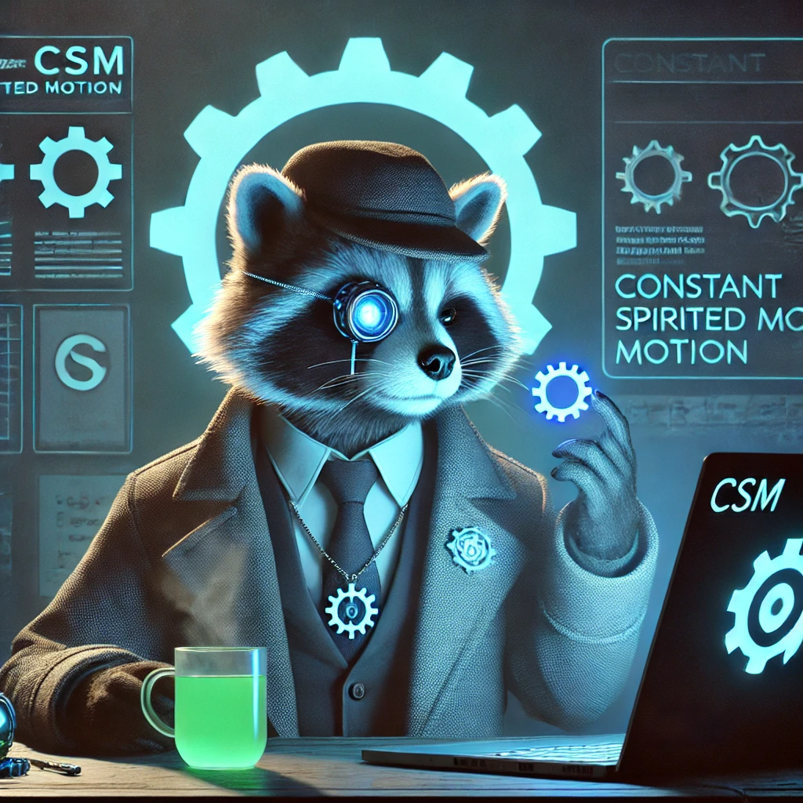
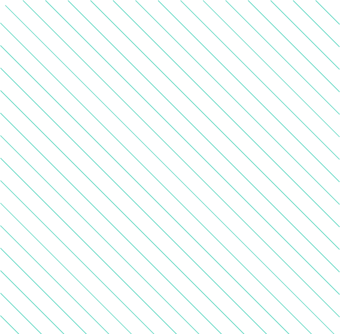

Hi, I`m german speaking Frontend Developer based in Hannover, Motivated by the limitless opportunities within IT, I am excited about crafting visually captivating and intuitive websites and applications.
Flexible in terms of working environments, I can work effectivley both on-site remotely.
I am open-minded and always looking for personal challanges to constantly improve my knowledge and skills.
In my profession, programming isn't just about writing code; its's creatve form of problem-solving. I take pride in my ability to distill complex technical challanges into simple, user-friendly solutions. This way, I help you achieve your goals and bring your visions to life.